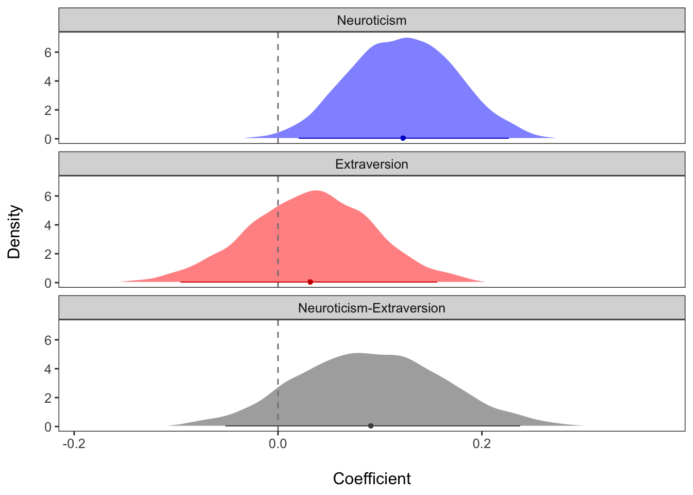

In this demo, we will discuss how to test whether two regression coefficients differ signficantly from each other.
The reason for conducting such an analysis is that in psychology (and other disciplines) we sometimes want to know whether the effect of our focal construct (or variable) is a better predictor of a particular outcome compared to another construct (or variable). As discussed in work by Gelman & Stern (2006), we cannot reach this conclusion using the traditional output of a regression model alone. They make the point that just because one variable significantly predicts the outcome and another does not, does not mean that the two variables are significantly different from each other. Shrout & Yip-Bannicq (2017) also reinforce this point and emphasize the importance of testing whether coefficients are significantly different from each other, not just from 0.
As an example, we will use the affect dataset from the psych package in R. Generally speaking, this dataset contains variables corresponding to 5 scales from the Eysenck Personality Inventory and the Motivational State Questionnaire, which was administered twice. For the purposes of this demo, we will examine only extraversion (ext) and neuroticism (neur) scores as predictors, and tense arousal (TA2) from the second measurement occasion as the outcome.
library(dplyr)
library(car)
library(psych)head(affect)## Study Film ext neur imp soc lie traitanx state1 EA1 TA1 PA1 NA1 EA2 TA2
## 1 maps 3 18 9 7 10 3 24 22 24 14 26 2 6 5
## 2 maps 3 16 12 5 8 1 41 40 9 13 10 4 4 14
## 3 maps 3 6 5 3 1 2 37 44 1 14 4 2 2 15
## 4 maps 3 12 15 4 6 3 54 40 5 15 1 0 4 15
## 5 maps 3 14 2 5 6 3 39 67 12 20 7 13 14 15
## 6 maps 1 6 15 2 4 5 51 38 9 14 5 1 7 12
## PA2 NA2 state2 MEQ BDI
## 1 7 4 NA NA 0.04761905
## 2 5 5 NA NA 0.33333333
## 3 3 1 NA NA 0.19047619
## 4 0 2 NA NA 0.38461538
## 5 16 13 NA NA 0.38095238
## 6 2 2 NA NA 0.23809524For the purposes of this demo, we will test a relatively straight-forward hypothesis: Neuroticism (neur) is a significantly stronger predictor of tense arousal (EA2) than extraversion (ext).
We will first mean center our two predictors.
affect$neur.c <- scale(affect$neur, center = T, scale = F)
affect$ext.c <- scale(affect$ext, center = T, scale = F)Next, we will fit a regression model in which tense arousal from the second measurement occasion is a function of neuroticism and extraversion.
fit <- lm(TA2 ~ neur.c + ext.c, data = affect)
summary(fit)##
## Call:
## lm(formula = TA2 ~ neur.c + ext.c, data = affect)
##
## Residuals:
## Min 1Q Median 3Q Max
## -11.7831 -3.4415 -0.2372 3.3699 15.7363
##
## Coefficients:
## Estimate Std. Error t value Pr(>|t|)
## (Intercept) 15.65364 0.26752 58.514 <2e-16 ***
## neur.c 0.12294 0.05388 2.282 0.0232 *
## ext.c 0.03204 0.06086 0.526 0.5990
## ---
## Signif. codes: 0 '***' 0.001 '**' 0.01 '*' 0.05 '.' 0.1 ' ' 1
##
## Residual standard error: 4.86 on 327 degrees of freedom
## Multiple R-squared: 0.01573, Adjusted R-squared: 0.009714
## F-statistic: 2.614 on 2 and 327 DF, p-value: 0.0748
The results indicate that neuroticism significantly predicts tense arousal, whereas extraversion does not. We also see that the size of the coefficient for neuroticism is larger than the coefficient for extraversion. Based on this, it would be tempting conclude that neuroticism is a "stronger" or "better" predictor of tense arousal.
However, we actually cannot draw this conclusion based on this information alone, as discussed by Gelman and Stern (2006) and Shrout and Yip-Bannicq (2017).
To properly test our hypothesis, we need to test the difference in our coefficients directly.
We will first do this using the linearHypothesis function from the car package. All we need to do is enter the name of our lm model object and the hypothesis we are interested in testing, as shown below.
linearHypothesis(fit, "neur.c - ext.c = 0")## Linear hypothesis test
##
## Hypothesis:
## neur.c - ext.c = 0
##
## Model 1: restricted model
## Model 2: TA2 ~ neur.c + ext.c
##
## Res.Df RSS Df Sum of Sq F Pr(>F)
## 1 328 7758.2
## 2 327 7722.8 1 35.421 1.4998 0.2216Here, we see that although the effect of neuroticsm was significantly different from 0 and the effect of extraversion was not in our original model, we are unable to conclude that they are signficantly different from each other.
Although we have now tested our hypothesis, there are still other things we might want to know. For example, the test we performed did not provide an estimate or confidence interval of the difference in these coefficients, which are suggested by Shrout & Yip-Bannicq (2017).
There are a few ways one could go about doing this, but I found it best to simply write my own function, thereby ensuring I could obtain all the information I wanted.
The function below can be run so that estimates and tests of the difference between two coefficient can be obtained in a single line of code.
difftest_lm <- function(x1, x2, model){
diffest <- summary(model)$coef[x1,"Estimate"]-summary(model)$coef[x2,"Estimate"]
vardiff <- (summary(model)$coef[x1,"Std. Error"]^2 +
summary(model)$coef[x2,"Std. Error"]^2) - (2*(vcov(model)[x1, x2]))
# variance of x1 + variance of x2 - 2*covariance of x1 and x2
diffse <- sqrt(vardiff)
tdiff <- (diffest)/(diffse)
ptdiff <- 2*(1-pt(abs(tdiff), model$df, lower.tail=T))
upr <- diffest + 1.96*diffse
lwr <- diffest - 1.96*diffse
df <- model$df
return(list(est=round(diffest, digits =2),
t=round(tdiff, digits = 2),
p=round(ptdiff, digits = 4),
lwr=round(lwr, digits = 2),
upr=round(upr, digits = 2),
df = df))
}Let's apply the function to our example model:
difftest_lm("neur.c", "ext.c", fit)## $est
## [1] 0.09
##
## $t
## [1] 1.22
##
## $p
## [1] 0.2216
##
## $lwr
## [1] -0.05
##
## $upr
## [1] 0.24
##
## $df
## [1] 327We see that the p-value matches the p-value we got using the linearHypothesis function. However, we are also now able to see that the estimated difference between extraversion and neuroticism is b = 0.09, and the 95% CI ranges from -0.05 to 0.24.
Thus far, we have focused on testing differences in coefficients using the Frequentist approach. However, a comparable analysis can also be performed using a Bayesian model. In fact, testing for differences in coefficients is arguably more straight-forward with Bayesian estimation. Because Bayesian estimation involves generating a distribution of possible values given the dataset (known as the posterior distribution) for each parameter, to get the difference in two coefficients we only need to take the difference of their posterior distributions.
First, we will estimate the same model in a Bayesian way using the brms package for R. Note that this package uses similar syntax to the lm() function we used to estimate our model before.
library(brms)
bfit <- brm(TA2 ~ neur.c + ext.c, data = affect, seed = 111) summary(bfit)## Family: gaussian
## Links: mu = identity; sigma = identity
## Formula: TA2 ~ neur.c + ext.c
## Data: affect (Number of observations: 330)
## Samples: 4 chains, each with iter = 2000; warmup = 1000; thin = 1;
## total post-warmup samples = 4000
##
## Population-Level Effects:
## Estimate Est.Error l-95% CI u-95% CI Rhat Bulk_ESS Tail_ESS
## Intercept 15.65 0.27 15.11 16.17 1.00 4258 2707
## neur.c 0.12 0.05 0.02 0.23 1.00 4192 2912
## ext.c 0.03 0.06 -0.10 0.16 1.00 4094 3136
##
## Family Specific Parameters:
## Estimate Est.Error l-95% CI u-95% CI Rhat Bulk_ESS Tail_ESS
## sigma 4.87 0.19 4.52 5.26 1.00 3992 3092
##
## Samples were drawn using sampling(NUTS). For each parameter, Eff.Sample
## is a crude measure of effective sample size, and Rhat is the potential
## scale reduction factor on split chains (at convergence, Rhat = 1).We see that, having used default (noninformative) priors in our Bayesian analysis, the estimates for neur.c and ext.c are essentially the same as those obtained in the Frequentist analysis.
We can now test for the difference in these coefficients. Here are two ways of doing this.
First, we can use the hypothesis() function from brms. This is a helpful and easy-to-use function, as all we need to do is feed in the name of the model object and specify the hypothesis we want to test.
hypothesis(bfit, "neur.c - ext.c = 0")## Hypothesis Tests for class b:
## Hypothesis Estimate Est.Error CI.Lower CI.Upper Evid.Ratio
## 1 (neur.c-ext.c) = 0 0.09 0.07 -0.05 0.24 NA
## Post.Prob Star
## 1 NA
## ---
## 'CI': 90%-CI for one-sided and 95%-CI for two-sided hypotheses.
## '*': For one-sided hypotheses, the posterior probability exceeds 95%;
## for two-sided hypotheses, the value tested against lies outside the 95%-CI.
## Posterior probabilities of point hypotheses assume equal prior probabilities.Again, we see that the point estimate for the difference and the 95% credibility interval look similar to the results we found before.
A second approach simply involves going through the steps that hypothesis() uses under the hood: extracting the posterior distributions for both coefficients and then taking their difference.
To begin, we need to pull out the posterior samples from our model.
bfit_post <- posterior_samples(bfit)Next, we use simple subtraction to take the difference in the two posterior distributions of interest and compute the mean and 95% credibility interval of this difference. (Note that the variables referring to the posterior draws have the prefix "b_" added to them).
bfit_diff <- bfit_post$b_neur.c - bfit_post$b_ext.c
mean(bfit_diff) %>% round(digits = 2)## [1] 0.09quantile(bfit_diff, probs = c(.025, .975)) %>% round(digits = 2)## 2.5% 97.5%
## -0.05 0.24These results are the same as those obtained using the hypothesis() function.
A nice way to visualize the difference in neur.c and ext.c is to plot the posterior distributions for each coefficient, as well as the posterior distribution of their difference. The plots below show these distributions, along with the predicted mean value (dot) and 95% credibility interval (solid line along the x-axis). The zero line is emphasized with the dashed gray line.
With this visualization, we can see that there is a positive value for the difference of neur.c and ext.c, but that zero cannot be ruled out as a plausible value.
postdensplot <- function(m, var1, var2, name1, name2){
require(brms)
require(dplyr)
var1name <- noquote(paste("b_", var1, sep = ""))
var2name <- noquote(paste("b_", var2, sep = ""))
mp <- as.data.frame(posterior_samples(m))
var1_post <- dplyr::select(mp, var1name)
var2_post <- dplyr::select(mp, var2name)
diff <- as.data.frame(var1_post - var2_post)
mpost_var1 <- data.frame(post = var1_post, Coefficient = name1)
colnames(mpost_var1) <- c("post", "Coefficient")
mpost_var2 <- data.frame(post = var2_post, Coefficient = name2)
colnames(mpost_var2) <- c("post", "Coefficient")
mpost_diff <- data.frame(post = diff, Coefficient = paste(name1, name2, sep = "-"))
colnames(mpost_diff) <- c("post", "Coefficient")
mpost_long_df <- rbind(mpost_var1, mpost_var2, mpost_diff)
mpost_long_df <- mpost_long_df %>% group_by(Coefficient) %>%
mutate(post_mean = mean(post),
post_lwr = quantile(post, probs = .025),
post_upr = quantile(post, probs = .975),
post_lwr90 = quantile(post, probs = .05),
post_upr90 = quantile(post, probs = .95)) %>% ungroup()
require(ggplot2)
myplot <- ggplot(mpost_long_df, aes(x = post, fill = Coefficient)) +
geom_density(color = "white", alpha = .5) +
geom_vline(xintercept = 0, color = "gray50", linetype = "dashed") +
labs(x = "\nCoefficient", y = "Density\n") +
scale_fill_manual(values = c("blue", "red", "gray30")) +
scale_color_manual(values = c("blue3", "red3", "gray30")) +
geom_segment(aes(x=post_lwr, xend=post_upr, y=.05, yend=.05, color = Coefficient), size = .2, alpha = .7) +
geom_point(aes(x = post_mean, y = 0.05, color = Coefficient), size = 1, alpha = .8) +
theme_bw() +
theme(text=element_text(size=10)) +
theme(legend.position="none") +
theme(panel.grid.major = element_blank(), panel.grid.minor = element_blank()) +
facet_wrap(~Coefficient, ncol = 1, strip.position="top")
return(myplot)
}
postdensplot(bfit, "neur.c", "ext.c", "Neuroticism", "Extraversion") + theme(text=element_text(size=12))
As this example shows, even if one effect is significant and the other is not, they may not be significantly different from each other. There are also cases in which two effects are both significantly different from 0 but may (or may not) be significantly different from each other. Our interpretations of the data may change in important ways as a result of testing differences between coefficients.
Another thing to add is that in the example above, our predictors were measured on the same scale (i.e., they were measured in the same units) and had standard deviations that were of roughly similar size. However, this may not always be in the case. If predictors are measured on different scales, or have very different standard deviations, then one would want to put them on the same scale in order to test differences in their effects. This could involve, for example, standardizing variables so that they are all in standard deviation units.
View .Rmd source code
updated September 7, 2019
The material above reflects the best of my knowledge on this topic. Please be sure to check your results and code carefully.